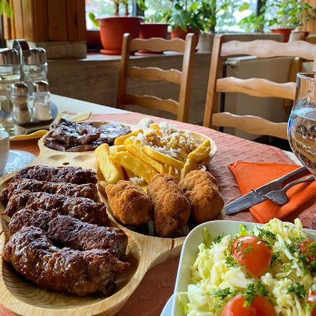

Casa Rodica
Refugiul verde al Brezei
O vilă întreagă pe un hectar de livadă, cu piscină, foișor și trei zone de divertisment. Până la 20 de oaspeți.
Descoperă Casa RodicaNu trebuie să cărați provizii de acasă: magazinele și restaurantele din Breaza sunt la câțiva pași, iar bucătăriile caselor vă lasă să gătiți în ritmul vostru.

Unul dintre marile avantaje ale Brezei este că nu te obligă la compromisuri: ai bucătării complet utilate pentru mesele în grup, dar și magazine și restaurante aproape, pentru zilele în care preferi să nu gătești.
În apropiere găsești magazine locale și un Mega Image, așa că îți aduci doar ce îți place să gătești. Bucătăriile caselor sunt dotate pentru grupuri mari, cu tot ce trebuie pentru mic dejun, prânz și cine în familie.
Pentru sejururile mai lungi, această apropiere de magazine face diferența: reaprovizionarea este simplă, fără drumuri până în oraș.
Dacă nu ai chef să gătești, se poate comanda de la restaurantele din Breaza. La cerere, îți recomandăm parteneri locali de catering, un pachet de mic dejun sau un grătar pregătit — ideal când vrei să te bucuri de timp cu ai tăi, nu de vase.

Zona Prahovei este bogată în produse de casă — brânzeturi, miere, dulcețuri, fructe de sezon. Un sejur în Breaza este o ocazie bună să le descoperi, fie din magazinele locale, fie prin recomandările gazdelor.
Bucătăria bine utilată invită la mese în grup: un mic dejun lung, un prânz gătit împreună și o cină în familie. Pentru serile speciale, un vin bun și o atmosferă caldă fac diferența.
Dacă preferați să nu gătiți, comanda de la restaurantele din Breaza sau un pachet de catering rezolvă totul — voi vă bucurați de timp, nu de vase.
Zona Prahovei este generoasă cu produse de casă: brânzeturi, miere, dulcețuri și fructe de sezon. Un sejur în Breaza este o ocazie bună să le descoperi, direct din magazinele locale sau prin recomandările gazdelor.

Da — magazine locale și un Mega Image sunt la câțiva pași de casă, ideale pentru reaprovizionare.
Da, se poate comanda de la restaurantele din Breaza. La cerere, recomandăm și parteneri de catering sau un grătar pregătit.
Da, este utilată pentru mese în grup — cu tot ce trebuie pentru mic dejun, prânz și cină.
Cazare în Breaza
O vilă întreagă pe un hectar de livadă, cu piscină, foișor și trei zone de divertisment. Până la 20 de oaspeți.
Descoperă Casa RodicaCasa de poveste cu mansardă „Hobbit", living de 100 mp și ceaun pentru 30. Până la 20 de oaspeți.
Descoperă Casa Alinka